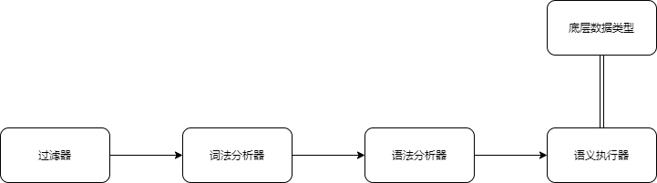

rtex(Runnable TEX)
让我们从一个情景出发。小赵亲爱的数学老师布置了一个作业：已知有10行10列学生，若每个学生的行编号是i，列编号是j，编号从0开始，则其分数为
小赵知道老师布置这个作业并不是想让他求100次，而是希望他用一些高超的数学技巧来简单得到结果，但很可惜，小赵是计算机学院的学生，这学期他数学课几乎一分钟都没听，一直在做计组。所以小赵还是编写了程序来求解这个问题。他遵循了这样的步骤：
小赵就这样做完了今天的作业，老师给了他这次作业满分。
第二天，小赵亲爱的数学老师又布置了新的作业，令他惊喜的是这次作业几乎和昨天的作业一模一样，仅仅只是分数的计算公式改为
但是这次老师给了小赵0分，因为他忘了修改word中数学公式的部分，老师很疑惑他是怎么根据上面的式子得到下面的结果的。
第三天，又是几乎一样的作业布置了下来。这次小赵小心谨慎地先修改了word中数学公式的部分，然后再修改了代码部分。
但是这次依然是0分，因为他忘记重新复制黏贴输出结果了。
第四天，又是一模一样的作业布置了下来。小赵意识到自己的记忆和金鱼差不多，按照之前的步骤那样繁琐地在代码和word中反复切换，对他而言太过困难了。他迫切地想要一种方式能够将代码和文档合二为一。
小赵想起他的室友Mr.Zhao之前写了个markdown的拓展，叫rtex，它似乎就能在文档中编程。
rtex非常容易上手，小赵之前学过latex，也经常使用markdown，对于他而言，这门语言几乎不存在任何的学习成本。他很快就学会了它，并用它写了作业：
已知
@@@
let Matrix M_{10, 10};
M_{i,j} = 3*i+cos(j) #where i=0,1...9 #where j=0,1...9;
@@@
求
@@@
let Real s;
s = \sum_{i=0}^{9} \sum_{j=0}^{9} M_{i,j};
@@@
则$s=$@@s;@@。
已知
求
则
rtex让小赵非常满意，以后他只需要修改一次就可以完成作业，而不需要既修改数学公式又修改代码和复制黏贴输出结果了。
但很可惜这次作业中老师是按步给分的，直接输出答案的小赵依然是0分。
rtex是对mdmath(https://marketplace.visualstudio.com/items?itemName=goessner.mdmath)的一个拓展，而mdmath是对markdown的一个拓展。
mdmath使得可以直接在markdown中插入latex段落，它会在生成html文件时自动处理这些latex段落，例如$M_{2,3}$，经过mdmath会被转换为
而rtex则是可以在markdown中插入rtex段落，这些段落会被rtex解释器转换为latex段落。也就是如下的流程：
rtex段落中包含的就是rtex代码。
rtex并不是排版语言，虽然所有的rtex代码都有对应的良好排版的输出方式，但是rtex并不是用来控制排版的语言。
rtex代码是可执行代码。rtex解释器会维护符号表、变量堆，所有rtex代码描述的运算都会在解释过程中被实际地执行。
第一章中的小赵因为他的金鱼脑袋而想要找到一种文档与代码相结合的方式来省时省力。事实上，就算没有那么金鱼脑袋，我们也经常希望能够让“描述执行逻辑的文字”与“实际执行逻辑的代码”能够合二为一。
例如jupyter notebook就是在试着达成这个目的。在jupyter notebook中，文档被分割成一个个块，每个块都可以是代码或者文本，也就是在整份文档中，代码和文本可以交错摆放——并且代码块还是可执行的。
rtex就是受jupyter的启发而诞生的，但rtex更进一步。注意到jupyter中代码依然是代码，在最终生成的文档中，文本与代码依然泾渭分明。rtex想要做的就是抹去这条线——rtex想要在最后的文档中让代码和文本看起来一模一样。
例如，小赵就不可能使用jupyter来实现他的目的，因为他依然需要在文本块中输一遍数学公式，再在代码块中编写代码，而且还会将自己是编程完成作业这一事实暴露给老师。
另一方面，用jupyter编写的文档并不适合给非程序员看，因为它依然要求读者能够读懂代码。而rtex则通过对代码本身进行良好排版，使得非程序员也能阅读。例如，哪怕数学老师从来没学过编程，他也肯定能读懂第一章中最后小赵提交的作业。
总结来说，rtex迎合这样的需求：
所以，rtex是怎样满足上一章中提到的需求的呢？它以这几点来满足：
用第一章中小赵的作业为例，
最终，小赵只写了一份文档，就得到了计算结果，同时还得到了一份老师也能看懂的文档。
完整的ebnf记法的语法描述请参见“附录一、语法”，本章仅介绍各类语法，而不作形式化描述。
你可以在任何markdown文件的任何位置插入rtex段落。插入方法分为块段落(Block Paragraph)和行段落(Inline Paragraph)。块段落以@@@为标记符，行段落以@@为标记符。
例如：
@@@
let Real k;
k = 3;
@@@
将会插入一个rtex块段落。上述段落最终的转换效果如下：
行段落也是同理。@@ k; @@会被转换成
每个rtex段落都是语句(statement)的序列，每个语句都以分号结尾。每个语句又是语段(phase)的序列，语段之间用#拼接，例如：
@@@
let Matrix M_{2,2};
M_{i,j} = i+j #where i=0,1...1 #where j=0,1...1;
@@@
其中第二行就是由三个语段构成的语句。转换结果是：
最终会得到
而语段中可以包含若干表达式(expression)，其数量和位置根据语段类型的不同而不同。上文中k=3的左端的k和右端的3分别为左值表达式和右值表达式。
除了上述的程序结构外，出于方便的考虑，还有一个特例，那就是打印语句。语句除了由语段构成，还可以由一个右值表达式直接表示。其效果就是打印出该右值表达式的值。例如@@ k; @@会将变量k的值打印出来：
目前rtex有三类语段：类型语段(Type Phase)，赋值语段(Assign Phase)，where语段(Where Phase)。
类型语段会在rtex上下文的符号表中插入标识符，并将其标记为指定的类型。例如@@ let Matrix K_{3, 3}; @@，转化为
赋值语段顾名思义，会将等号右边的表达式的值赋给等号左边的变量。例如@@ K_{0,1}=2; @@，转化为
where语段实质上就是循环控制，它会迭代执行它左侧的所有语段，循环变量使用省略号表达式来指定。例如@@ K_{i,0}=1 #where i=0,1...2; @@，转化为
表达式分为两类：左值表达式和右值表达式。
任何用类型语段声明过的变量名都能形成一个左值表达式，除此之外对矩阵变量的元素的访问也构成一个左值表达式。例如之前声明的实数变量k就是一个左值表达式，而因为之前声明了一个矩阵变量K_{0,2}也是一个左值表达式。
左值表达式可以被赋值修改。与之相对的，右值表达式不可以被赋值修改。
右值表达式就是表示一堆运算的结果，不做赘述，只介绍两类rtex特有的右值表达式。
rtex目前并不允许语段级别的条件控制，主要是因为我没想到好的对应的排版方法。目前的条件控制是在表达式级别的。例如：
@@@
k = (
2, if K_{0,1}>2 #
1, else
);
@@@
会被转换为：
其结果因为
这个在小赵同学的作业中也被使用了，它能够实现表达式级别的循环控制。它的存在主要是因为排版很好看，所以我加上去了。例如：
@@@
k = \sum_{i=0}^{2}\sum_{j=0}^{2} K_{i,j};
@@@
会被转换为：
其结果为
可以直接以字面值的形式给矩阵赋值：
@@@
let Matrix B_{2,2};
B = [(2,2)
0, 1,
2, 3
];
@@@
转换为：
结果为
矩阵乘法目前打印出来不太好看，但也实现了：
@@@
let Matrix C_{2,2};
C = [(2,2)
3, 2,
1, 0
];
C = C * B;
@@@
转换为：
其结果
还有矩阵转置：
@@@
C=C^T;
@@@
转换为：
得到
因为有的时候我们会想要在文档里直接写出rtex代码的源码（例如这份文档），所以会想要打把@@@直接打出来而不被rtex当作段落分隔符，此时可以打\@@@进行转义。
因为一份文档可能很长（例如这份文档），而我们又希望在这份文档的不同区域使用相同的变量名，但指的却并不是同一个变量。也就是我们想要多个上下文。此时可以在文档中用@@##@@来清空rtex上下文。附带一提转义也与@@@类似，是\@@##@@。
完整的指称语义描述请见“附录二、语义”，本章只介绍一些比较特别的语义设计。
在rtex解释过程中，解释器不仅需要处理“执行”，还需要处理“排版”，也就是所有语法元素都有两层语义，一层是“它执行后的效果”，一层是“它排版后的结果”，称前者为执行语义，后者为排版语义。
通常的编程语言不存在语段的概念，语段是个介于语句(statement)和表达式(expression)之间的语法元素。另一方面rtex也不存在通常的编程语言具有的函数(function)概念。
例如，C语言程序宏观来看是由函数序列构成的，取而代之的，rtex是由段落序列构成的。但是段落这一概念对于变量作用域、函数执行顺序都不会产生影响，事实上“段落”的划分对于rtex程序执行不会产生任何影响，它仅仅只会影响排版。也就是说，段落这一语法元素不具有执行语义，仅具有排版语义。
所以“段落”是rtex最高级的具有排版语义的语法元素，但并不是最高级的具有执行语义的语法元素。向下一层的话，rtex具有最高级执行语义的语法元素就是“语句”了。这就导致rtex和其他语言比起来少了一个层次，在循环等机制的实现上就变得比较棘手。为此我引入了“语段”这一介于“语句”与“表达式”之间的语法元素。
事实上，最后循环控制也确实是在语段层次实现的。
因为rtex所有代码最后都会被排版插入文档中，而人阅读文档的习惯是顺序阅读，所以rtex程序总体上也是遵循线性执行的顺序。
但是如果不引入循环控制和条件控制的话，rtex作为编程语言而言，表达能力就实在太弱了。但要是直接引入if...else...，while...等常见的控制语句，又可能导致最后会让程序难以阅读。所以我在“良好的可读性”这一基本要求的束缚下为循环控制寻找到了两种比较好的表示方式，也为条件控制找到了一种。
数学中，类似“
另一方面，类似
数学中，类似"
rtex的类型设计也是从“可被良好排版”这点上出发进行的。因为后端使用的排版语言是latex，它适合用于排版数学元素，所以rtex的类型也是与数学元素一一对应。目前支持的类型为实数(Real)，整数(Integer)，矩阵(Matrix)。
rtex的类型转换都为隐式转换，无法显式进行。在计算右值表达式或执行赋值语段时，若发现操作数中有实数类型的，就会尝试将与之运算的操作数转换成实数类型。
rtex的变量都是静态束定的，即rtex变量一经声明，其类型就确定，在整个程序生命周期中都不可更改。这是从文档的可读性出发而设计的。
因为最后rtex是要生成一份供人阅读的文档，而如果同一个符号在同一个文章段落中前后却是两种不同的类型，就很容易让读者产生混乱。
特例有二：
本章不会介绍解释器的实现细节（毕竟作业是设计语言，而不是写编译器），只会介绍几个与语言相关的点，较为详细的解释器实现描述方法见“附录三、解释器实现”。
通常，文档是直接输给词法分析器的，但是因为rtex是内嵌在markdown中的编程语言，而我不希望还要把代码复制黏贴到一个专门的文件中再执行。所以，我在词法分析器前又用flex做了一个过滤器，只把rtex段落传输给rtex解释器，而其他文本都直接输出。也就是如下的流程：

因为我不想要引入中间代码，而rtex中的where语段又是后置的循环控制，导致如果我直接在语法解析的过程中执行的话，会无法实现where语段。所以我在语法解析过程中不直接执行，而是将执行过程封装成函数（其实就类似于中间代码），把这一函数传递给上层语法元素，最后在语句这一层次再进行执行。从而实现了这一效果：虽然where语段是后置的语法元素而被较晚地解析，但却能控制前面已被解析的语法元素的执行。
排版语义会受到执行语义的影响。例如上文中提到的“打印语句”，它会将变量的值输出，本质就是之前的rtex的执行语义改变了变量值，从而影响这条语句的排版语义。不过反过来，执行语义并不受排版语义影响。
另一方面，上一条中提到，执行语义需要逐层向上传递函数，最后以语句为批次进行执行。类似的，排版语义是以段落为批次进行执行的。所以在传递过程中，排版语义与执行语义需要共同传递，以实现执行语义对排版语义产生的影响。
最直接的样例就是这份文档，没错，这份文档就是“含rtex段落的markdown”。它的源码在(https://github.com/supplient/MyBisonCompiler/blob/master/test/testfile.md)，经过rtex解释器后生成的“含latex段落的markdown”在(https://github.com/supplient/MyBisonCompiler/blob/master/output/output.md)，再经过mdmath（不是我写的）后生成的html文件（打印后的pdf文件）就是你所见的这份文档。
这里我们做个简单的数据处理作为演示。
@@##@@
首先我们有@@ let Matrix M_{10, 10}; @@，它满足@@ M_{i, j} = cos(j+i*10) #where i=0,1...9 #where j=0,1...9; @@。
然后我们想对矩阵$M$做一个过滤，让所有负项都归零，所有正项都倍增，也就是
@@@
M_{i,j} = (
0, if M_{i,j}<0 #
2 * M_{i,j}, else
)
#where i=0,1...9
#where j=0,1...9
;
@@@
经过过滤后,
$M=$@@M;@@
最后我们想得到M的第0行和第3列的内积，也就是
@@@
let Real s;
s = \sum_{i=0}^{9} M_{0,i}*M_{i,3};
@@@
得到结果$s=$@@s;@@。
首先我们有
然后我们想对矩阵
经过过滤后,
最后我们想得到M的第0行和第3列的内积，也就是
得到结果
注意这里没有列出正文中提到的特殊记号"@@##@@"，因为本章中只涉及rtex解释器，而不涉及在这之前的过滤器。@@##@@的处理是在过滤器中进行的。
此处忽略掉下文语法描述中直接用双引号标出来的token，而只列出下文中使用全大写记号的token。
| 文本 | token名 |
|---|---|
| let | LET |
| \sum | SUM |
| ... | ELLIPSIS |
| if | IF |
| else | ELSE |
| where | WHERE |
program: paragraphs
;
paragraphs: paragraph paragraphs
| paragraph
;
paragraph: block_paragraph
| inline_paragraph
;
block_paragraph: "@@@" statements "@@@"
;
inline_paragraph: "@@" statements "@@"
;
statements: statement ";" statements
| statement ";"
;
statement: phases
| right_exp
;
phases: phase "#" phases
| phase
;
phase: type_phase
| assign_phase
| where_phase
;
type_phase: LET TYPE IDENTIFIER
| LET TYPE IDENTIFIER subscript_dim
;
where_phase: WHERE IDENTIFIER "=" ellipsis_exp
;
ellipsis_exp: right_exp "," right_exp ELLIPSIS right_exp
;
assign_phase: left_exp "=" right_exp
;
left_exp: IDENTIFIER
| IDENTIFIER subscript_dim
;
right_exp: right_exp OPERATOR right_exp
| BUILT_IN_FUNCTION "(" right_exp ")"
| INTEGER
| REAL
| list_exp
| sum_exp
| "(" if_exp ")"
| "(" right_exp ")"
| left_exp
| right_exp "^T"
;
list_exp: "[" right_exp_list "]"
| "[" "(" INTEGER "," INTEGER ")" right_exp_list "]"
;
right_exp_list: right_exp "," right_exp_list
| right_exp
;
sum_exp: SUM subscript_cond superscript_cond right_exp
;
subscript_cond: "_" "{" IDENTIFIER "=" right_exp "}"
;
superscript_cond: "^" "{" right_exp "}"
;
if_exp: if_exp_phases
;
if_exp_phases: if_exp_phase "#" if_exp_phases
| if_exp_phase
;
if_exp_phase: right_exp "," IF bool_exp
| right_exp "," ELSE
;
bool_exp: right_exp OPERATOR right_exp
;
subscript_dim: "_" "{" right_exp_list "}"
;
| 含义 | 记号 | 定义 |
|---|---|---|
| 整数域 | Integer | - |
| 实数域 | Real | - |
| 字符域 | Character | - |
| 布尔域 | Bool | - |
| --- | --- | --- |
| 整数列表域 | IntList | Integer -> Integer |
| 实数列表域 | RealList | Integer -> Real |
| 字符列表域 | CharList | Integer -> Character |
| 布尔列表域 | BoolList | Integer -> Bool |
| 矩阵域 | Matrix | Integer X Integer -> Real |
| 字符串域 | String | CharList |
| 字符串列表域 | StrList | Integer -> String |
| 语段列表域 | PhaseList | Integer -> Phase |
| 右值函数列表域 | RightValueFuncList | Integer -> RightValueFunc |
| 列表值域 | ListValue | Integer + Real + Character + Bool + String + Phase + RightValueFunc |
| 列表域 | List | IntList + RealList + CharList + BoolList + StrList + PhaseList + RightValueFuncList |
| --- | --- | --- |
| 变量类型域 | Type | {"Integer", "Real", "Matrix"} |
| 变量地址域 | Location | Integer |
| 变量域 | Var | Type X Location |
| --- | --- | --- |
| 符号表域 | SymTbl | String -> Var |
| 整数变量堆域 | IntHeap | Location -> Integer |
| 实数变量堆域 | RealHeap | Location -> Real |
| 矩阵变量堆域 | MatHeap | Location -> Matrix |
| 输出域 | Out | String |
| 执行上下文域 | ExecContext | SymTbl X IntHeap X RealHeap X MatHeap |
| 上下文域 | Context | ExecContext X Out |
| --- | --- | --- |
| 右值域 | RightValue | Integer + Real + Matrix |
| 左值域 | LeftValue | Var + Location X RightValueFunc X RightValueFunc |
| 循环条件域 | LoopCondition | Integer X Integer X Integer |
| --- | --- | --- |
| 过程 | Procedure | ExecContext -> ExecContext |
| 高阶函数 | FuncForFunc | Procedure -> Procedure |
| 左值函数 | LeftValueFunc | ExecContext -> LeftValue |
| 右值函数 | RightValueFunc | ExecContext -> RightValue |
| 布尔函数 | BoolFunc | ExecContext -> Bool |
| 循环条件函数 | LoopConditionFunc | ExecContent -> LoopCondition |
| 语段 | Phase | Procedure + FuncForFunc |
| 条件函数对 | IfPair | RightValueFunc X BoolFunc |
部分函数在此处只列出而不做定义。
| 名字 | 映射 | 含义 |
|---|---|---|
| ListEmpty | ->List | 返回一个空列表 |
| ListInit | ListValue->List | 返回一个仅将输入作为元素的列表 |
| ListIsEmpty | List->Bool | 若列表为空返回True，否则返回False |
| ListHead | List->ListValue | 返回列表的第一个元素 |
| ListNoHead | List->List | 返回列表除第一个元素以外剩下的部分 |
| ListTail | List->ListValue | 返回列表的最后一个元素 |
| ListNoTail | List->List | 返回列表除最后一个元素以外剩下的部分 |
| ListPushHead | ListValue X List -> List | 在函数头插入一个元素 |
| ListPushTail | ListValue X List -> List | 在函数尾插入一个元素 |
| ToString | RightValue -> String | 将右值转换成格式正确的字符串 |
| ToMatrixString | Integer X Integer X StrList -> String | 把一组字符串排版成矩阵的形式 |
| ListToMatrix | Integer X Integer X RealList -> Matrix | 将一个实数列表转换成矩阵 |
| MartrixEmpty | Integer X Integer -> Matrix | 输入行列数，返回对应大小的空矩阵 |
| MatrixVary | Integer X Integer X Real X Matrix -> Matrix | 将指定矩阵的指定位置替换为指定值 |
| StringListJoin | StringList X String -> String | 将字符串列表拼接起来 |
| OperatorCalculate | String X RightValue X RightValue -> RightValue | 会根据操作符和操作数进行适当的类型转换和计算 |
| BuiltinCalculate | String X RightValue -> RightValue | 会根据指定的函数名和操作数进行适当的类型转换和计算 |
| + | String X String -> String | 将字符串拼接 |
register_var: SymTbl X String X Var -> SymTbl
* register_var(symTbl, id, var)(id_toSearch) =
if id == id_toSearch then var
else symTbl(id_toSearch)
unregister_var: SymTbl X String -> SymTbl
* register_var(symTbl, id)(id_toSearch) =
if id == id_toSearch then fail
else symTbl(id_toSearch)
allocate_int: IntHeap -> Integer X IntHeap
* let (i, intHeap') = allocate_int(intHeap) in
intHeap'(i') =
if i'!=i
then intHeap(i')
else 0
allocate_real也是同理，不做重复
allocate_mat: MatHeap X Integer X Integer -> Integer X MatHeap
* let (i, matHeap') = allocate_mat(matHeap, row, col) in
matHeap'(i') =
if i'!=i
then matHeap(i')
else MatrixHeap(row, col)
deallocate_int: Integer X IntHeap -> IntHeap)
* deallocate_int(i, intHeap)(i') =
if i'==i
then fail
else intHeap(i)
deallocate_real和deallocate_matrix也是同理
vary_int: Integer X Value X IntHeap -> IntHeap
* vary_int(i, v, intHeap)(i') =
if i==i'
then v
else intHeap(i')
vary_real和vary_matrix也是同理
get_var(var Var, execCtx) =
let (type, loc) = var in
if type == "Integer" then
intHeap(loc)
else if type == "Real" then
realHeap(loc)
else if type == "Matrix" then
matHeap(loc)
else fail
make_var("Integer", id, execCtx) =
let (i, intHeap') = allocate_int(intHeap) in
(
register_var(symTbl, id, ("Integer",i)),
intHeap', realHeap, matHeap
)
make_var("Real", id, execCtx)也是同理
remove_var("Integer", id, execCtx) =
let (type, i) = symTbl(id) in
(
unregister_var(symTbl, id),
deallocate_int(i, intHeap),
realHeap, matHeap
)
remove_var("Real", id, execCtx)同理
make_var("Matrix", id, row, col, execCtx) =
let (i, matHeap') = allocate_mat(matHeap, row, col) in
(
register_var(symTbl, id, ("Matrix",i)),
intHeap, realHeap, matHeap'
)
change_var(id String, newValue, execCtx) =
change_var(symTbl(id), newValue, execCtx)
change_var(var Var, newValue, execCtx) =
let (type, loc) = var in
if type=="Integer" then
(
symTbl,
vary_int(loc, newValue, intHeap),
realHeap, matHeap
)
else if type=="Real" then
(
symTbl,
intHeap,
vary_real(loc, newValue, realHeap),
matHeap
)
else if type=="Matrix" then
(
symTbl,
intHeap,
realHeap,
vary_mat(loc, newValue, matHeap),
)
else fail
print_paragraph: Out X StrList X Bool -> PrintContext
* print_paragraph(out, strList, flag) =
let loop_print(strList, flag) =
if ListIsEmpty(strList) then ""
else
ListHead(strList)
+ if flag then "\n" else " "
+ loop_print(out, ListNoHead(strList), flag)
in
(out + if flag then "$$\n" else "$"
+ loop_print(strList, flag)
+ if flag then "$$\n" else "$"
, flag)
设函数族
而函数族
为方便起见，假设输入的
下文中将在不会引起歧义的地方略去参数。
注意下列等式左侧的
program
* work[paragraphs] = work[paragraphs]
paragraphs
* work[paragraph paragraphs] = work[paragraphs](work[paragraph](ctx))
* work[paragraph] = work[paragraph]
paragraph
* work[block_paragraph] = work[block_paragraph]
* work[inline_paragraph] = work[inline_paragraph]
block_paragraph
* work["Error[46.13]: invalid character: "
"] =
let (execCtx', strList) = exec[statements](execCtx) in
(execCtx', print_paragraph(out, strList, True))
inline_paragraph
* work["Error[46.15-24]: syntax error, unexpected IDENTIFIER, expecting @@@ or @@
"] =
let (execCtx', strList) = exec[statements](execCtx) in
(execCtx', print_paragraph(out, strList, False))
从这里开始，在语法元素旁边我会标出该语法元素对应的exec函数的映射关系
statements: ExecContext -> ExecContext X StrList
* exec[statement ";" statements] =
let (execCtx', s) = exec[statement](execCtx) in
let (execCtx'', strList) = exec[statements](execCtx') in
(execCtx'', ListPushHead(s, strList))
* exec[statement ";"] =
let (execCtx', s) = exec[statement](execCtx) in
(execCtx', ListInit(s))
statement: ExecContext -> ExecContext X String
* exec[phases] =
let (phaseList, s) = exec[phases] in
let
exec_phase(phaseList) =
exec_phase(ListNoTail(phaseList), ListTail(phaseList))
exec_phase(phaseList, fff FuncForFunc) =
fff(exec_phase(phaseList))
exec_phase(phaseList, proc Procedure) =
λ execCtx. exec_phase(phaseList)(proc(execCtx))
in
(exec_phase(phaseList)(execCtx), s)
* exec[right_exp] =
let rightF = exec[right_exp] in
let rv = rightF(execCtx) in
(execCtx, ToString(rv))
phases: -> PhaseList X String
* exec[phase "#" phases] =
let (p, s) = exec[phase] in
let (ps, ss) = exec[phases] in
(ListPushHead(p, ps), s + " \\quad" + ss)
* exec[phase] =
let (p, s) = exec[phase] in
(ListInit(p), s)
phase: -> Phase X String
* exec[type_phase] = exec[type_phase]
* exec[assign_phase] = exec[assign_phase]
* exec[where_phase] = exec[where_phase]
type_phase: -> Procedure X String
* exec[LET TYPE IDENTIFIER] =
let f = λ execCtx.
make_var(TYPE, IDENTIFIER, execCtx)
in
(f, TYPE + "\\quad " + IDENTIFIER)
* exec[LET TYPE IDENTIFIER subscript_dim] =
let (row_f, col_f, dim_str_list) = exec[subscript_dim] in
let f = λ execCtx.
let row = row_f(execCtx) in
let col = col_f(execCtx) in
make_var(TYPE, IDENTIFIER, row, col, execCtx)
in
(f, TYPE + "\\quad " + IDENTIFIER + "_{" + StringListJoin(dim_str_list, " \\times ") + "})
where_phase: -> FuncForFunc X String
* exec[WHERE IDENTIFIER "=" ellipsis_exp] =
let loop(start, step, end, execCtx, proc) =
let
execCtx' = change_var(IDENTIFIER, start, execCtx)
in
if start==end then execCtx
else loop(start+step, step, end, proc(execCtx'), proc)
in
let (startF, stepF, endF, elli_s) = exec[ellipsis_exp] in
let f = λ proc. λ execCtx.
let start = startF(execCtx) in
let step = stepF(execCtx) in
let end = endF(execCtx) in
let execCtx' = make_var("Integer", IDENTIFIER, execCtx) in
let execCtx'' = loop(start, step, end, execCtx', proc) in
remove_var("Integer", IDENTIFIER, execCtx'')
in
let s = IDENTIFIER + "=" + elli_s in
(f, s)
ellipsis_exp: -> LoopConditionFunc X String
* exec[right_exp_1 "," right_exp_2 ELLIPSIS right_exp_3] =
let (rf1, s1) = exec[right_exp_1] in
let (rf2, s2) = exec[right_exp_2] in
let (rf3, s3) = exec[right_exp_3] in
let stepF = λ execCtx.
rf2(execCtx) - rf1(execCtx)
(
rf1, stepF, rf3,
s1 + "," + s2 + "..." + s3
)
assign_phase: -> Procedure X String
* exec[left_exp "=" right_exp] =
let
assign(var Var, rv, execCtx) = change_var(var, rv, execCtx)
assign(loc Integer, rowF RightValueFunc, colF RightValueFunc, rv, execCtx) =
let row = rowF(execCtx) in
let col = colF(execCtx) in
change_var(
("Matrix", loc),
MatrixVary(
row, col,
rv,
matTbl(loc)
),
execCtx
)
in
let (lf, ls) = exec[left_exp] in
let (rf, rs) = exec[right_exp] in
let f = λ execCtx.
let lv = lf(execCtx) in
let rv = rf(execCtx) in
assign(lv, rv, execCtx)
in
(f, ls + " = " + rs)
left_exp: -> LeftValueFunc X String
* exec[IDENTIFIER] =
let f = λ execCtx.
symTbl(IDENTIFIER)
in
(f, IDENTIFIER)
* exec[IDENTIFIER subscript_dim] =
let (rowF, colF, dim_str_list) = exec[subscript_dim] in
let f = λ execCtx.
let (type, loc) = symTbl(IDENTIFIER) in
(loc, rowF, colF)
in
(
f,
IDENTIFIER + "_{" + StringListJoin(dim_str_list) + "}"
)
right_exp: -> RightValueFunc X String
* exec[right_exp_1 OPERATOR right_exp_2] =
let (rf1, s1) = exec[right_exp_1] in
let (rf2, s2) = exec[right_exp_2] in
let f = λ execCtx.
let rv1 = rf1(execCtx) in
let rv2 = rf2(execCtx) in
OperatorCalculate(OPERATOR, rv1, rv2)
in
(
f,
s1 + OPERATOR + s2
)
* exec[BUILT_IN_FUNCTION "(" right_exp ")"] =
let (rf, s) = exec[right_exp] in
let f = λ execCtx.
let rv = rf(execCtx) in
BuiltinCalculate(BUILT_IN_FUNCTION, rv)
in
(
f,
BUILT_IN_FUNCTION + "(" + s + ")"
)
* exec[INTEGER] =
(
λ execCtx. INTEGER,
ToString(INTEGER)
)
* exec[REAL] =
(
λ execCtx. REAL,
ToString(REAL)
)
* exec[list_exp] = exec[list_exp]
* exec[sum_exp] = exec[sum_exp]
* exec["(" if_exp ")"] = exec[if_exp]
* exec["(" right_exp ")"] =
let (rf, s) = exec[right_exp] in
(
rf,
"(" + s + ")"
)
* exec[left_exp] =
let (lf, s) = exec[left_exp] in
let
get(var Var, execCtx) = get_var(var, execCtx)
get(loc Integer, rowF Integer, colF Integer, execCtx)=
let
row = rowF(execCtx)
col = colF(execCtx)
in
matTbl(loc)(row, col)
in
let f = λ execCtx.
let lv = lf(execCtx) in
get(lv, execCtx)
in
(
f,
s
)
* exec[right_exp "^T"]
let (rf, s) = exec[right_exp] in
let f = λ execCtx.
let rv = rf(execCtx) in
BuiltinCalculate("^T", rv)
in
(
f,
s + "^T"
)
list_exp: -> RightValueFunc
* exec["[" "(" ROW_INT "," COL_INT ")" right_exp_list "]"] =
let (rf_list, s_list) = exec[right_exp_list] in
let f = λ execCtx.
let loop_cal_rv(rf_list) =
if ListIsEmpty(rf_list) then
ListEmpty()
else
ListPushHead(
ListHead(rf_list)(execCtx),
ListNoHead(rf_list)
)
in
let rv_list = loop_cal_rv(rf_list) in
ListToMatrix(ROW_INT, COL_INT, rv_list)
in
let s = ToMatrixString(ROW_INT, COL_INT, s_list) in
(f, s)
right_exp_list: -> RightValueFuncList
* exec[right_exp "," right_exp_list] =
let (rf, s) = exec[right_exp] in
let (rf_list, s_list) = exec[right_exp_list] in
(
ListPushHead(rf, rf_list),
ListPushHead(s, s_list)
)
* exec[right_exp] =
let (rf, s) = exec[right_exp] in
(
ListInit(rf),
ListInit(s)
)
sum_exp: -> RightValueFunc
* exec[SUM subscript_cond superscript_cond right_exp] =
let loop_sum(start, end, execCtx, rf) =
let
execCtx' = change_var(IDENTIFIER, start, execCtx)
in
if start==end then execCtx
else
rf(execCtx') + loop_sum(start+1, end, execCtx, rf)
in
let (rf, rs) = exec[right_exp] in
let (id, startF, subS) = exec[subscript_cond] in
let (endF, superS) = exec[superscript_cond] in
let f = λ execCtx.
let start = startF(execCtx) in
let end = endF(execCtx) in
let execCtx' = make_var("Integer", id, execCtx) in
loop_sum(start, end, execCtx', rf)
in
let s = "\\sum" + subS + superS + " " + rs in
(f, s)
subscript_cond: -> String X RightValueFunc X String
* exec["_" "{" IDENTIFIER "=" right_exp "}"] =
let (rf, s) = exec[right_exp] in
(
(IDENTIFER, rf),
"_{" + IDENTIFIER + "=" + s + "}"
)
superscript_cond: -> RightValueFunc X String
* exec["^" "{" right_exp "}"] =
let (rf, s) = exec[right_exp] in
(
rf,
"^{" + s + "}"
)
if_exp: -> RightValueFunc X String
* exec[if_exp_phases] =
let (ifPairList, sList) = exec[if_exp_phases] in
let f = λ execCtx.
let loopCheck(ifPairList) =
if ListIsEmpty(ifPairList) then
fail
else
let (headBoolF, headRightF) = ListHead(ifPairList) in
if headBoolF(execCtx) then
headRightF(execCtx)
else
loopCheck(ListNoHead(ifPairList))
in
loopCheck(ifPairList)
in
let
s = StringListJoin(sList, " \n")
in
(f, s)
if_exp_phases: -> IfPairList X StringList
* exec[if_exp_phase "#" if_exp_phases] =
let (ifPair, s) = exec[if_exp_phase] in
let (ifPairList, sList) = exec[if_exp_phases] in
(
ListHead(ifPair, ifPairList),
ListHead(s, sList)
)
* exec[if_exp_phase] =
let (ifPair, s) = exec[if_exp_phase] in
(
ListInit(ifPair),
ListInit(s)
)
if_exp_phase: -> Ifpair X String
* exec[right_exp "," IF bool_exp] =
let (rf, rs) = exec[right_exp] in
let (bf, bs) = exec[bool_exp] in
(
(rf, bf),
rs + "&, if " bs
)
* exec[right_exp "," ELSE] =
let (rf, rs) = exec[right_exp] in
(
(rf, λ execCtx. True),
rs + "&, else"
)
bool_exp: -> BoolFunc
* exec[right_exp1 OPERATOR right_exp2] =
let (rf1, rs1) = exec[right_exp1] in
let (rf2, rs2) = exec[right_exp2] in
let f = λ execCtx.
OperatorCalculate(
OPERATOR,
rf1(execCtx),
rf2(execCtx),
)
in
(
f,
rs1 + OPERATOR + rs2
)
subscript_dim: -> RightValueFunc X RightValueFunc X Strig
* exec["_" "{" right_exp1 "," right_exp2 "}"] =
let (rf1, rs1) = exec[right_exp1] in
let (rf2, rs2) = exec[right_exp2] in
(
(rf1, rf2),
"_{" + rs1 + "," + rs2 + "}"
)
rtex解释器使用flex+bison实现，由五部分构成：过滤器、词法分析器、语法分析器、语义执行器、底层数据类型。
因为研究了很长时间才搞定，所以附带一提，flex和bison都是启用了c++的。

正文部分也介绍过过滤器，它负责从markdown文件中提取出rtex段落。
过滤器使用flex实现，也就是说它本质也是个词法分析器，负责检测rtex段落的分隔符。将每对分隔符夹着的rtex段落传输给后续的词法分析器，并且也在完成执行后，用语义执行器返回的输出替换掉原本的rtex段落。
就是用flex直接实现的词法分析器，没有什么特别的。要说的话，因为过滤器也是flex实现的，所以rtex解释器执行时会需要同时运行两个flex词法分析器，这部分还真是花了大力气才搞定（主要是一堆YY_宏的设定）。
就是用bison直接实现的语法分析器，基本上ebnf复制黏贴过来，再加上分号就完事了。
这一部分我从语法分析器里剥离出来，单独在一个叫Driver的类里实现，并且Driver类的对象driver也是不受语法分析器、词法分析器影响而独立存在的一个对象，换句话说，它的分配与释放与语法词法分析器都无关。
这是因为我希望rtex上下文的分配、维护、销毁与语法分析过程无关。如正文中提到的，“段落”这一语法元素并不影响rtex的执行语义，这也意味着段落之间的rtex上下文应该保持一致。然而语法分析过程是以段落为单位的，因为段落影响排版语义，也就是说每个段落都会有自己的排版输出，要想实现插入进文本的效果的话，要么在该插入的地方做好标记，等全部执行完以后再一个个插入；要么就每次读完一个段落就插入。我选择了后者，这就导致在每个段落的结尾我都需要停止语法分析&语义执行过程，从而获得输出进行插入。
所以如果rtex上下文随语法分析过程开始而创建，随语法分析过程结束而销毁的话，每个段落都会有一个新的rtex上下文，而这不是我想要的。因此我将rtex上下文和语法分析过程独立了开来。
因此rtex上下文不受词法分析器和语法分析器控制，而是由过滤器控制（过滤过程在一整个文档的处理过程中都不会停止，这正是我想要的rtex上下文生存周期）
主要是矩阵的实现，没什么特别的，我之所以把它和语义执行器分离开来，是因为它与rtex本身其实没啥关系，所以只要接口一致，其实可以随时替换，是一个独立的模块。